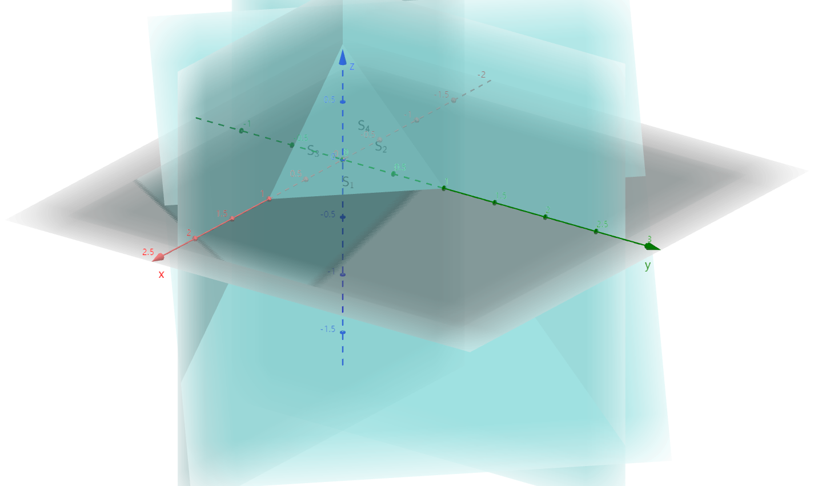
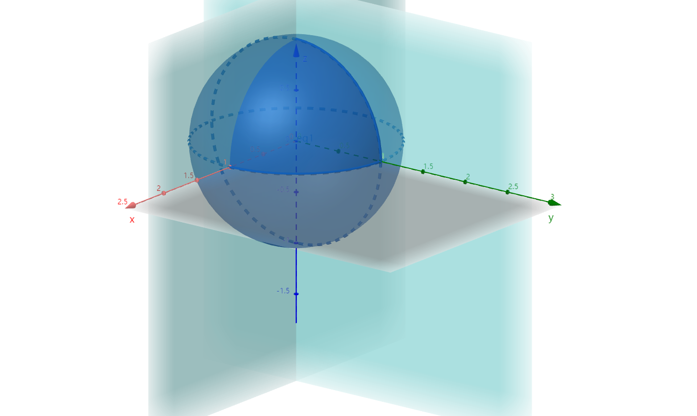

§10.5 对坐标的曲面积分（II类）
F(x,y,z)=0，n=(Fx,Fy,Fz)，n0=Fx2+Fy2+Fz21(Fx,Fy,Fz)=(cosα,cosβ,cosγ)
- 上侧：cosγ≥0，下侧：cosγ≤0
- 前侧：cosα≥0，后侧：cosα≤0
- 左侧：cosβ≤0，右侧：cosβ≥0
定义：有向曲面的投影
有效 Σ：z=z(x,y) 上任取 ΔS 在 xOy 面上的投影 (ΔS)xy
(ΔS)xy=⎩⎨⎧Δδcosγ>00cosγ=0−Δδcosγ<0
引例：ρ=1，v=(P,Q,R)，计算在单位时间内通过有向 Σ 的流体质量
vn0=Pi+Qj+Rk=cosαii+cosβij+cosγik
m=ρ⋅v=ρS∣v∣=S⋅v⋅n0≈i=1∑nvi⋅niΔsi=i=1∑n(Pcosαi+Qcosβi+Rcosγi)Δsi=i=1∑n[P(ξi,ηi,ζi)(ΔSi)yz+Q(ξi,ηi,ζi)(ΔSi)zx+R(ξi,ηi,ζi)(ΔSi)xy]
一、定义
Σ 有向，P、Q、R在 Σ 上有界
- 对 Σ 进行任意分割 ΔSi
- 任意取点 (ξi,ηi,ζi)
若 limλ→0∑i=1n(Picosαi+Qicosβi+Ricosγi)ΔSi 存在，则称之为 A=(P,Q,R) 在有向 Σ 上对坐标的曲面积分（II类），记作
∬ΣP(x,y,z)dydz+Q(x,y,z)dzdx+R(x,y,z)dxdy
二、性质
-
线性
∬Σa1P1(x,y,z)+a2P2(x,y,z)dydz=a1∬ΣP1(x,y,z)dydz+a2∬ΣP2(x,y,z)dydz
-
可加性
∵Σ∴∬ΣPdydz=Σ1+Σ2=∬Σ1Pdydz+∬Σ2Pdydz
-
有向性 ∬Σ−Pdydz=−∬ΣPdydz
三、计算
转化为二重积分
- ∬ΣR(x,y,z)dxdy=±∬DxyR(x,y,z(x,y))dxdy，上侧取+，下侧取-。
- ∬ΣR(x,y,z)dydz=±∬DyzR(x(y,z),y,zdydz，前侧取+，后侧取-。
- ∬ΣR(x,y,z)dzdx=±∬DzxR(x,y(y,z),zdzdx，左侧取+，右侧取-。
例题
-
I=∬Σ(x+1)dydz+ydzdx+1dxdy，Σ:x+y+z=1 与三个坐标面所围成的外侧

解：Σ=Σ1(z=0,(x,y)∈Dxy)+Σ2(x=0,(y,z)∈Dyz)+Σ3(y=0,(x,z)∈Dzx)+Σ4(x+y+z=1)
I1=0+0+∬Σ11dxdy=−∬Dxydxdy=−21
I2=∬Σ2(x+1)dydz=−∬Dyz(0+1)dydz=−21
I3=∬Σ3ydzdx=−∬Dzx0dzdx=0
I4=∬Σ4(x+1)dydz+∬Σ4ydzdx+∬Σ4dxdy=∬Dyz(2−y−z)dydz+∬Dzx(1−x−z)dzdx+∬Dxy1dxdy=32+61+21=34
I=−21−21+0+34=31
-
I=∬Σxyzdxdy，Σ:x2+y2+z2=1 的外侧（x≥0 且 y≥0

解：z=±1−x2−y2，Dxy:x2+y2≤1（x≥0 且 y≥0）
I=∬Σ上xyzdxdy+∬Σ下xyzdxdy=+∬Dxyxy1−x2−y2dxdy+[−∬Dxyxy1−x2−y2dxdy]=2∬Dxyxy1−x2−y2dxdy=152
两类曲面积分的联系
∬ΣPdydz+Qdzdx+Rdxdy=±∬Dxy[P(−fx)+Q(−fy)+R]dxdy（上侧+，下侧-）
- Σ:z=f(x,y)，n=(−fx,−fy,1)（上）或 (fx,fy,−1)（下）
Σ:y=g(z,x)
- n=(−gx,1,−gz)
- ∬ΣPdydz+Qdzdx+Rdxdy=±∬Dzx[P(−gx)+Q+R(−gz)]dzdx（左侧-，右侧+）
Σ:x=h(y,z)
- n=(1,−hy,−hz)
- ∬ΣPdydz+Qdzdx+Rdxdy=±∬Dyz[P+Q(−hy)+R(−hz)]dydz（左侧-，右侧+）
例题
求 I=∬Σ(f+x)dydz+(2f+y)dzdx+(f+z)dxdy，Σ:x−y+z=1 在第四卦限的上侧，f为与x、y、z有关的函数。
解：原式=+∬Dxy(f+x)⋅1−(2f+y)+(f+z)dxdy=∬Dxy(x−y+1−x+y)dxdy=∬Dxy1dxdy=21